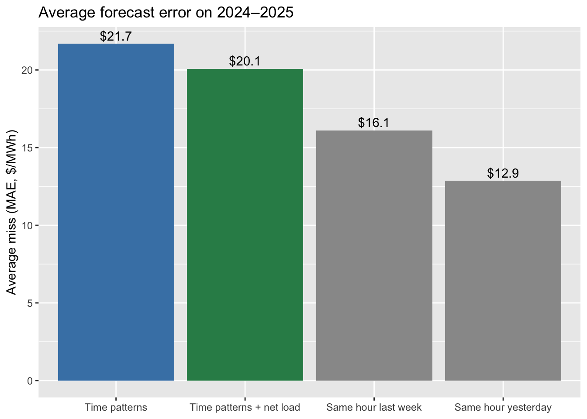
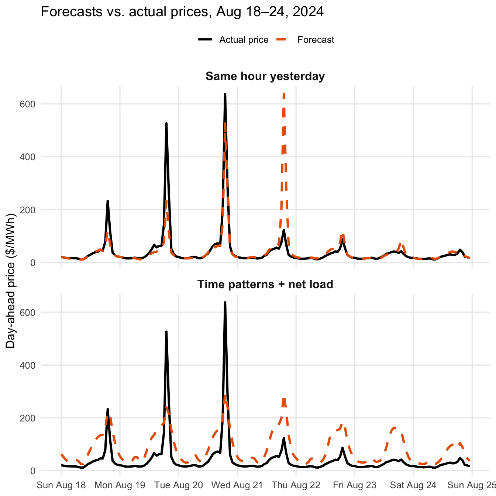
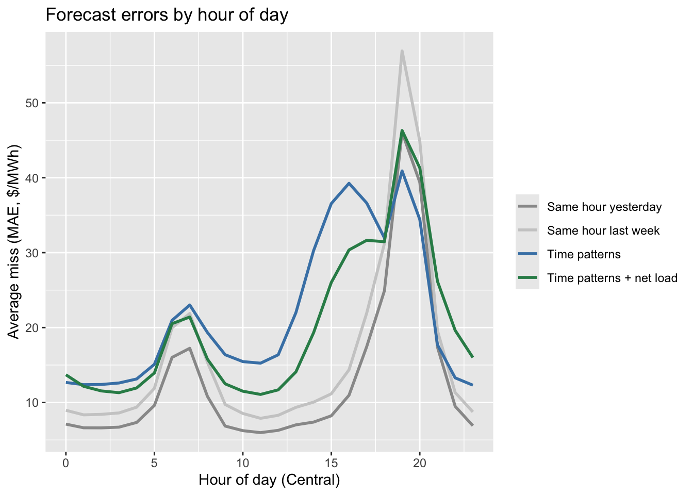

Code: load packages and data
library(tidyverse)
library(lubridate)
ercot <- read_rds(here::here("data/processed/ercot_hourly.rds"))Juan Ignacio Mendez Valdez
Notebook 02 showed that wind and solar lower prices, and that prices depend on net load (demand minus wind and solar). This notebook asks whether that is useful in practice: if you know tomorrow’s net load, can you forecast tomorrow’s day-ahead prices better?
grid <- ercot |>
filter(hub == "HB_BUSAVG") |>
arrange(hour_start_utc) |>
mutate(
# What is known when tomorrow's forecast is made: today's and last week's
# day-ahead prices for the same hour.
price_yesterday = lag(da_price, 24),
price_last_week = lag(da_price, 168),
hour_f = factor(hour_local),
weekday_f = factor(as.character(weekday)),
month_f = factor(month(time_local)),
net_load_gw = net_load_mw / 1000,
uri = time_local >= as.POSIXct("2021-02-10", tz = "America/Chicago") &
time_local < as.POSIXct("2021-02-21", tz = "America/Chicago")
) |>
filter(!is.na(price_last_week), !is.na(net_load_gw))
# Train on 2021-2023 without Winter Storm Uri. Prices are capped at $500 for
# training only, so a handful of extreme hours don't dominate what the models
# learn. Forecasts are always graded against the real, uncapped prices.
train <- grid |>
filter(year <= 2023, !uri) |>
mutate(target = pmin(da_price, 500))
test <- filter(grid, year >= 2024)Four ways to forecast each hour of tomorrow’s day-ahead price:
| Forecast | How it works |
|---|---|
| Same hour yesterday | Tomorrow at 3 p.m. = today at 3 p.m. |
| Same hour last week | Tomorrow at 3 p.m. = the same weekday last week at 3 p.m. |
| Time patterns | A regression using recent prices plus hour of day, weekday and month |
| Time patterns + net load | The same regression, plus tomorrow’s net load |
An important caveat: the last model uses the actual net load for each hour. In practice a forecaster would use ERCOT’s published forecasts of demand, wind and solar, which are close but not perfect. So this model shows the best case: how much better forecasts get when net load is known well.
m_time <- lm(target ~ price_yesterday + price_last_week + hour_f + weekday_f + month_f,
data = train)
m_net <- lm(target ~ price_yesterday + price_last_week + hour_f + weekday_f + month_f +
net_load_gw + I(net_load_gw^2),
data = train)
forecasts <- test |>
mutate(
`Same hour yesterday` = price_yesterday,
`Same hour last week` = price_last_week,
`Time patterns` = predict(m_time, test),
`Time patterns + net load` = predict(m_net, test)
)
model_names <- c("Same hour yesterday", "Same hour last week",
"Time patterns", "Time patterns + net load")
forecasts_long <- forecasts |>
select(hour_start_utc, time_local, year, hour_local, da_price, all_of(model_names)) |>
pivot_longer(all_of(model_names), names_to = "model", values_to = "forecast") |>
mutate(model = factor(model, levels = model_names),
error = forecast - da_price)
# Save forecasts for the battery backtest in notebook 04
write_rds(forecasts, here::here("data/processed/forecasts_2024_2025.rds"))accuracy <- forecasts_long |>
group_by(model) |>
summarise(
mae = mean(abs(error)),
rmse = sqrt(mean(error^2)),
median = median(abs(error))
) |>
mutate(vs_yesterday = (1 - mae / mae[model == "Same hour yesterday"]) * 100)
knitr::kable(accuracy, digits = 1,
col.names = c("Forecast", "MAE (\\$/MWh)", "RMSE (\\$/MWh)",
"Typical miss (\\$/MWh, median)", "Improvement vs. yesterday (%)"),
caption = "Forecast errors, 2024–2025 (lower is better)")| Forecast | MAE ($/MWh) | RMSE ($/MWh) | Typical miss ($/MWh, median) | Improvement vs. yesterday (%) |
|---|---|---|---|---|
| Same hour yesterday | 12.9 | 54.1 | 5.3 | 0.0 |
| Same hour last week | 16.1 | 62.3 | 7.1 | -25.3 |
| Time patterns | 21.7 | 47.5 | 16.3 | -68.6 |
| Time patterns + net load | 20.1 | 44.3 | 12.9 | -56.0 |
ggplot(accuracy, aes(reorder(model, -mae), mae)) +
geom_col(fill = c("grey60", "grey60", "steelblue", "seagreen")[as.integer(accuracy$model)]) +
geom_text(aes(label = paste0("$", round(mae, 1))), vjust = -0.4) +
labs(x = NULL, y = "Average miss (MAE, $/MWh)",
title = "Average forecast error on 2024–2025")
Findings: Electricity prices are hard to predict. The simplest guess, “same price as yesterday”, was the most accurate, missing by about $13/MWh on average. Our regression models did not beat it.
Adding net load (demand minus wind and solar) did make the regression model better: its average miss dropped from about $22 to $20. So this information helps, but not enough to beat the simple guess on average.
One summer week in 2024. The black line is the actual day-ahead price.
week_start <- as.POSIXct("2024-08-18", tz = "America/Chicago")
forecasts_long |>
filter(time_local >= week_start, time_local < week_start + days(7),
model %in% c("Same hour yesterday", "Time patterns + net load")) |>
ggplot(aes(time_local)) +
geom_line(aes(y = da_price, colour = "Actual price"), linewidth = 1.1) +
geom_line(aes(y = forecast, colour = "Forecast"), linewidth = 1.1,
linetype = "dashed") +
facet_wrap(~ model, ncol = 1) +
scale_colour_manual(values = c("Actual price" = "black", "Forecast" = "#E66100")) +
scale_x_datetime(date_breaks = "1 day", date_labels = "%a %b %d") +
labs(x = NULL, y = "Day-ahead price ($/MWh)", colour = NULL,
title = "Forecasts vs. actual prices, Aug 18–24, 2024") +
theme_minimal(base_size = 12) +
theme(legend.position = "top",
strip.text = element_text(face = "bold", size = 12),
panel.grid.minor = element_blank())
Findings: The top panel shows the “same as yesterday” forecast. It follows normal hours closely, but it is always one day late on spikes: after the $635 spike on August 20, it predicted another one on August 21, when the price only reached about $120.
The bottom panel shows the regression model. It correctly expects prices to rise every evening, but it misjudges how much: it underestimated the biggest spikes (about $290 instead of $635) and guessed too high on calmer days later in the week.
forecasts_long |>
group_by(model, hour_local) |>
summarise(mae = mean(abs(error)), .groups = "drop") |>
ggplot(aes(hour_local, mae, colour = model)) +
geom_line(linewidth = 1) +
scale_colour_manual(values = c("grey60", "grey80", "steelblue", "seagreen")) +
labs(x = "Hour of day (Central)", y = "Average miss (MAE, $/MWh)", colour = NULL,
title = "Forecast errors by hour of day")
forecasts_long |>
mutate(price_level = if_else(da_price > 100, "Expensive hours (above $100)",
"Normal hours ($100 or less)")) |>
group_by(price_level, model) |>
summarise(hours = n(), mae = mean(abs(error)), .groups = "drop") |>
pivot_wider(names_from = price_level, values_from = c(hours, mae)) |>
select(model, starts_with("mae")) |>
knitr::kable(digits = 1,
col.names = c("Forecast", "MAE: expensive hours", "MAE: normal hours"),
caption = "Average miss (\\$/MWh) on normal vs. expensive hours")| Forecast | MAE: expensive hours | MAE: normal hours |
|---|---|---|
| Same hour yesterday | 172.1 | 9.8 |
| Same hour last week | 173.0 | 13.1 |
| Time patterns | 153.5 | 19.2 |
| Time patterns + net load | 118.8 | 18.2 |
Findings: All forecasts miss most around 7 p.m., when solar fades and prices jump, and least overnight and at midday, when prices are steady.
Which forecast is best depends on the hour. On normal hours, “same as yesterday” is the most accurate, off by about $10/MWh. On expensive hours (above $100/MWh), the model with net load is the most accurate, off by about $119/MWh compared with $172 for “same as yesterday”. Net load helps most in the afternoon, when solar output is highest.
Findings: No single forecast was best everywhere. A simple rule (“same price as yesterday”) worked best on ordinary hours, while the model with net load worked best on the expensive hours that matter most. This supports notebook 02: knowing net load (demand minus wind and solar) helps predict the hours when power is most expensive.